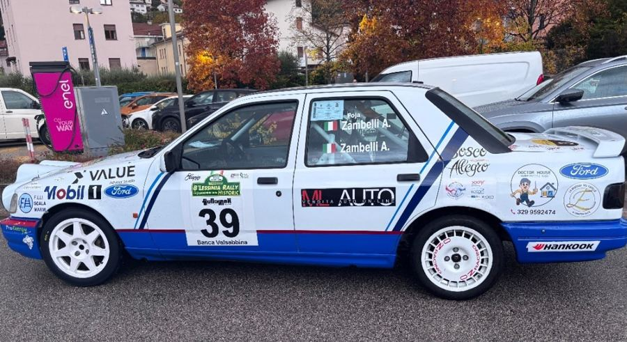

Sabato 14 novembre · tornante a fine PS 4/6/8 Calavedo, Bosco Chiesanuova
Adesso
Prossimo passaggio
–
Al tornante adesso:–
Strada Calavedo–
Strada Velo–
Riapertura indicativa: dopo l'auto "scopa".
Stato della gara
nessun comunicato
Ritardi e cambi di orario dai comunicati ufficiali. Ogni novità arriva anche come avviso.
Quando passa il 39
in attesa dell'ordine di partenza
Prossimo passaggio del 39 al tornante
–
L'orario stimato compare appena esce l'ordine di partenza.

Sierra Cosworth bianca e blu · Mobil 1 sul muso, alettone grande, cerchi bianchi (OZ dietro)
Come è calcolato
Orario della prova + 1 minuto per ogni auto davanti + circa 9 minuti fino al tornante. Si corregge da solo quando segni le auto nel registro. Sii pronto 5 minuti prima.
Chi sta arrivando
–
Le prossime auto al tornante, con l'orario stimato.
Ritardo sulla tabella:in orario
Come funziona
Quando segni un'auto nel registro, tutti gli orari si riallineano al ritardo reale. Se la prova viene fermata usa i pulsanti. I ritirati vengono saltati.
Correggi l'orario
Registro passaggi
0 auto
Segna ogni auto che passa: l'orario serve per dare il nome alle foto. Tocca una riga per correggerla.
Apripista e chiudipista: tocca quando passano
Tocca l'auto appena passata
Classifica live
aggiornata da Claude
Aggiornata da Claude dopo ogni prova, con il 39 evidenziato.
Cosa fare prima di partire e cosa mettere nello zaino
Da fare prima di sabato
0 di 0
Da portare
0 di 0
Documenti e soldi
Foto e video
Abbigliamento
Giornata al tornante
Cibo e bevande
Lessinia Rally Historic · sabato 14 novembre
Viaggio e Spot
Come arrivare, dove parcheggiare, il tornante e la zona intorno
Viaggio e servizi
Partenza consigliata da Verona sud
6:30
Circa un'ora (45 km) via Grezzana: a Bosco verso le 7:30, 15 minuti per trovare parcheggio, al tornante verso le 7:50, più di un'ora prima della chiusura (9:00) per prendere i posti migliori. Al massimo alle 6:45; con nebbia o ghiaccio non oltre le 6:30.
PParcheggio grande, circa 90 postigratis · 580 m · se in centro è pienoPortami lì
Alcuni posti in centro possono essere riservati: segui i commissari. Dal parcheggio 5 minuti a piedi.
Bar, bagni e servizi
☕Osteria La BaitaLargo Jenna · circa 100 m, la più vicina
☕Bar Brunelli · Dal CampePiazza della Chiesa · circa 350 m
☕Bar centrale · Frac · La CreperiePiazza Borgo e Piazza Marconi · circa 370–400 m
WCBagni pubblicivicino a Piazza della Chiesa · circa 300 mPortami lì
+Farmaciacirca 540 m, verso Via General Cantore
Orari di apertura da verificare sul posto.
Numeri utili
112EmergenzeNumero unico europeo: soccorso, carabinieri, vigili del fuoco
☎Organizzazione Rally Club ValpantenaBob +39 348 081 1712 · Gian +39 347 252 9415
Tornare a casa
Percorso verificato sulla cartina ufficiale: da Bosco a Grezzana si scende sulla SP6, che non è una prova speciale. La usano anche le auto da gara in trasferimento.
Dal parcheggio del palaghiaccio l'unica uscita in auto è Via Postojalyi → Via da Vinco → Via Saina.
Via da Vinco sbuca in Via Saina all'altezza dello STOP della prova. Durante una prova chiedi al commissario se puoi girare a sinistra verso il centro; se dice di no, aspetti la chiudipista.
Via Saina → Via Sant'Antonio → a destra sulla SP6 (Via General Cantore).
SP6 fino a Cerro Veronese, poi Grezzana e Verona. Circa 23 km e 30 minuti fino a Grezzana.
Non passare da Corbiolo e Lughezzano (PS Calavedo) né da Velo Veronese: fino a sera sono chiuse.
Al 112: "Bosco Chiesanuova, Via Saina, tornante a fine prova del rally" · 45.61978, 11.02700
Incidente in prova: non entrare in strada, avvisa un commissario.
Lessinia Rally Historic · sabato 14 novembre
Fotografie
Impostazioni, luce di ogni passaggio e scatti da non perdere
Il sole sul tornante
sabato 14
Inquadra il cielo e guarda dove sarà il sole a ogni passaggio.
Note
"Luce" vale guardando le auto che arrivano (verso ovest-nord-ovest). Le montagne possono coprire il sole prima del tramonto: controlla in AR sul posto.
Expert RAW
Dalla collinetta sopra il tornante: vedi tutta la curva dall'alto, a circa 30 m. Usa 3x per il punto di corda, 5x per l'arrivo dal rettilineo dei garage, 1x per la curva intera.
5 consigli per questa posizione
Striscione in basso: alzati in piedi o alza il treppiede, così resta fuori dall'inquadratura. Oppure tienilo sfocato in primo piano.
MF sul punto di corda (vicino al cartello rotondo arancione) con un'auto di prova, poi non toccarlo più.
Strada metà al sole e metà in ombra: misura la luce sull'auto, non sull'asfalto. Bianco fisso a circa 5500 K.
Con la brina le auto scivolano: usa la raffica da entrata a uscita.
Per la raffica del 39 Expert RAW è lento: tieni pronta la modalità Pro.
PS 4 · 10:17Sole alle spalle
Sole a 23° · ombre lunghe degli alberi
Corda 3x · 1/1000 · ISO auto
Arrivo 5x sul rettilineo dei garage · 1/1250
Curva intera 1x · 1/1000, auto al centro
GoPro sul treppiede, 2.7K 120 per il ralenti
PS 6 · 14:14Luce bassa, ombre
Sole a 18° · il tornante potrebbe essere in ombra
Corda 3x · 1/800 · ISO fino a 800
Panning dall'alto sull'uscita · 1/125 · ISO 50–100
In ombra? EV +0,3/+0,7 sulle auto bianche
GoPro 4K 60 · ISO max 800
PS 8 · 17:42Buio, fari
Cielo blu fino alle 17:55, poi buio
Scia sulla curva intera treppiede · 1x · 6–10 s · ISO 50
Fari 3x · 1/250 · ISO 3200
Niente 5x al buio
GoPro 4K 30 · ISO max 3200
VideoStorie
Dall'alto si vede tutta la curva: video 1x che segue l'auto
Verticale per le storie, Super Slow-mo per i traversi
Tocco lungo per bloccare l'esposizione
I DNG pesano molto: libera spazio. Tra un passaggio e l'altro tieni il telefono in tasca, al caldo.
Scatti da fare al 39
0 di 12
Dalla collinetta sopra il tornante: inquadrature diverse per ogni passaggio.
PS 4 · mattina, sole alle spalle
PS 6 · pomeriggio, luce bassa
PS 8 · buio e arrivo
Dai un nome alle foto
L'app divide le foto per auto con l'orario di scatto e il Registro.
Per la GoPro se l'orologio è sfasato (es. −40).
Registro da un altro dispositivo
Sul PC incolla qui l'elenco condiviso dal Registro del telefono.
Ricette Lightroom
punti di partenza
Sistema una foto, poi ⋯ → Copia impostazioni e incolla sulle altre dello stesso passaggio.
Come importare i preset
Telefono: Predefiniti → ⋯ → Importa predefiniti. PC: File → Importa profili e predefiniti. Se un file non viene accettato, usa i valori della scheda.
Esportare per Instagram
Post nel feed4:5 · 1080 × 1350Occupa più schermo del quadrato.
Storia9:16 · 1080 × 1920Margine sopra e sotto per le scritte.
Panoramica3 foto 4:5 in caroselloEntrata, corda e uscita.